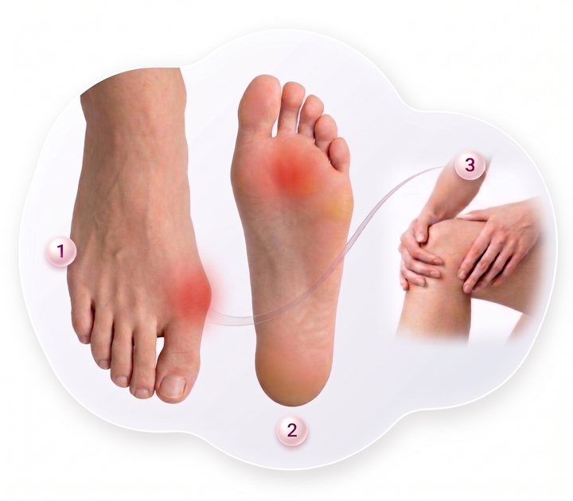

母趾が曲がり、靴に当たって痛みが出る
01
WHAT IS HALLUX VALGUS
外反母趾とは
外反母趾は、足の親指（母趾）が小指側へ曲がり、つけ根が突き出して靴に当たりやすくなる足の変形です。
靴に当たる痛みだけでなく、足裏の圧の偏りによるタコや、足全体のバランスの崩れにつながることがあります。

足裏の圧が偏り、タコができやすくなる
足全体のバランスが崩れ、ひざや腰など他の部位の負担につながることも
02
HOW COMMON
どのくらいの人が悩んでいるの？
成人女性の約3人に1人が、外反母趾であると報告されています。
出典：Matsuoka et al., “Epidemiology and risk factors of hallux valgus in Japanese population: HAPPI study,” Journal of Orthopaedic Science, 31(2), 380–386, 2026.
成人女性
31.6%
約3人に1人
03
CHOOSING SHOES
靴選びの悩み
「痛くない」と「好きなデザイン」の両立が難しい
市販の靴の規格が足に合わない
一般的な市販靴は、一定の規格に合わせて作られています。そのため、足幅や母趾まわりの形が合わないと、靴が当たり、履く時間そのものが負担になります。
オーダーメイド靴では、好きなデザインを選びづらい
足に合わせて作る靴は安心感がある一方で、色や形、トレンド感のあるデザインの選択肢が限られます。